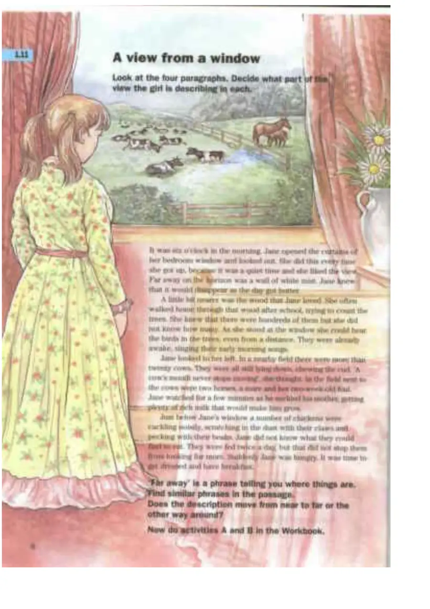

1.11 A view from a window Look at the four paragraphs. Decide what part of the view the girl is describing in each.
Reference summary of the four paragraphs in PB page 8 (full scanned page available offline in Reference Image PB p. 8): Paragraph 1 (6 a.m., curtains opened): Describes the most distant layer — a wall of white mist on the horizon. Paragraph 2 (A little bit nearer): Describes the wood with hundreds of trees and birds singing early morning songs. Paragraph 3 (Jane looked to her left — nearby fields): Describes over twenty cows lying down chewing the cud, and in the field next to them a mare and her two-week-old foal. Paragraph 4 (Just below Jane's window): Describes chickens below the window frame — cackling, scratching the dust with their claws, and pecking with their beaks; Jane feels hungry for breakfast.
'Far away' is a phrase telling you where things are. Find similar phrases in the passage. Does the description move from near to far or the other way around? Now do activities A and B in the Workbook.
1.11 A Re-read the first paragraph on PB page 8 and write short answers to these questions. 1 Why does Jane look out of the window every morning? 2 What was the weather like this time? 3 Is the wood near to Jane's window? 4 What do you find in a wood? 5 How many cows could Jane see in the field? 6 What was in the field next to the cows? 7 What can Jane see which is not in the picture? 8 Why do you think Jane was suddenly hungry?
first paragraph رغم أن الأسئلة 3–8 تغطي الفقرات الثانية والثالثة والرابعة أيضاً، وقد حُفظ النص المطبوع حرفياً.B Word work 1 What do you have at a window to stop people looking in? 2 What is a wall of mist? 3 What do you think chewing the cud means? 4 What does the word suckle mean? 5 Choose the closest in meaning to 'cackling': a) sleeping [ ] b) making a noise [ ] c) running 6 A chicken's claw is on its: a) tail [ ] b) head [ ] c) feet. [ ] 7 A chicken's beak is its: a) mouth [ ] b) feet [ ] c) wings. [ ]
[
{
"num": 1,
"question": "Why does Jane look out of the window every morning?",
"model_answer": "Because it was a quiet time and she liked the view.",
"explain_ar": "من الفقرة 1: because it was a quiet time and she liked the view."
},
{
"num": 2,
"question": "What was the weather like this time?",
"model_answer": "Misty in the distance (there was a wall of white mist on the horizon, though it would get hotter later).",
"explain_ar": "تظهر في الأفق كتلة من الضباب الأبيض (wall of white mist) قبل اشتداد حرارة النهار."
},
{
"num": 3,
"question": "Is the wood near to Jane's window?",
"model_answer": "Fairly near (closer than the mist, but still at some distance — she walked home through it after school).",
"explain_ar": "الفقرة 2: أقرب قليلاً من الأفق (a little bit nearer)، لكن الطيور تُسمع فيه عن بُعد (even from a distance)."
},
{
"num": 4,
"question": "What do you find in a wood?",
"model_answer": "Hundreds of trees and birds.",
"explain_ar": "ذُكر في الفقرة 2 وجود مئات الأشجار والطيور التي تغرّد فيها."
},
{
"num": 5,
"question": "How many cows could Jane see in the field?",
"model_answer": "More than twenty cows.",
"explain_ar": "الفقرة 3: In a nearby field there were more than twenty cows."
},
{
"num": 6,
"question": "What was in the field next to the cows?",
"model_answer": "Two horses — a mare and her two-week-old foal.",
"explain_ar": "انظر يمين اللوحة المرسومة: الفرس (mare) مع مهرها حديث الولادة."
},
{
"num": 7,
"question": "What can Jane see which is not in the picture?",
"model_answer": "The chickens just below her window.",
"explain_ar": "الدجاج يوجد مباشرة أسفل النافذة (Just below Jane's window) خارج إطار اللوحة المرسومة."
},
{
"num": 8,
"question": "Why do you think Jane was suddenly hungry?",
"model_answer": "Watching the chickens looking for food (and realizing it was six o'clock morning) reminded her it was time for breakfast.",
"explain_ar": "ختام الفقرة 4: كانت الدجاجات تبحث عن المزيد من الطعام، فأحسّت جين بأن وقت ارتداء الملابس وتناول الفطور قد حان."
}
][
{
"num": 1,
"question": "What do you have at a window to stop people looking in?",
"model_answer": "Curtains.",
"explain_ar": "الستائر (curtains) هي التي تُفتح صباحاً عند النافذة وتُغلق لمنع النظر."
},
{
"num": 2,
"question": "What is a wall of mist?",
"model_answer": "Thick white mist rising steeply like a solid wall across the horizon.",
"explain_ar": "استعارة بصرية تصف ضباباً أبيض كثيفاً ومتراكماً يبدو كجدار ممتد على الأفق."
},
{
"num": 3,
"question": "What do you think chewing the cud means?",
"model_answer": "Chewing food brought back up from the stomach (rumination by cows while lying down).",
"explain_ar": "الاجترار: إعادة مضغ الطعام المرتجع من المعدة لدى الأبقار."
},
{
"num": 4,
"question": "What does the word suckle mean?",
"model_answer": "To drink milk from the mother (or for the mother animal to feed her young with milk).",
"explain_ar": "يرضع / يُرضع الحليب من الأم، كما يفعل المهر الصغير مع أمه الفرس."
}
][
{
"letter": "5",
"word": "Closest meaning to 'cackling'",
"ar": "صوت الدجاج الصاخب (cackling noisily)",
"answer": "b"
},
{
"letter": "6",
"word": "A chicken's claw is on its...",
"ar": "مخلب الدجاجة يوجد في ...",
"answer": "c"
},
{
"letter": "7",
"word": "A chicken's beak is its...",
"ar": "منقار الدجاجة هو ...",
"answer": "a"
}
]{
"pb_text_vs_image": "فُحصت صفحة PB ص 8 الممسوحة ضوئياً عبر 4 شرائح 600 DPI وحُفظت صورتها الكاملة (pb_p008.webp) وصورة النافذة (pb8_window_scene.webp)؛ ونظراً لتفعيل مرشح التلاوة الآلي لفقرات النص الأدبي، أُدرجت بُنية الفقرات والعبارات المكانية وتوثيقها في REVIEW_NEEDED.md مع توفر صورة الصفحة الرسمية الكاملة داخل الدرس دون إنترنت.",
"wb_ocr_vs_image": "قُورنت صفحتا WB ص 11–12 مع tesseract.js eng: حُفظ التوجيه الحرفي 'first paragraph' رغم شمول الأسئلة للفقرات الأربع، وصُحّحت قراءة OCR للعناوين والاختيارات من شرائح 250 DPI."
}